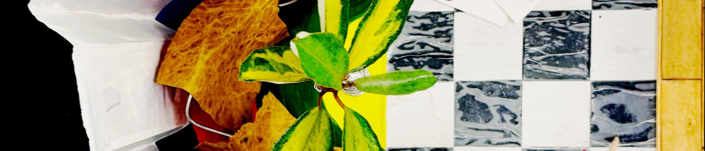

3D Design — Diorama
Unit 1, Week 5

Research
My point of departure was an interest of mine that had been developing prior to this project: the relationship between our inner/psychic space and the physical spaces we inhabit. On one hand, our surroundings can profoundly influence our mental and emotional states—consider the deliberate architecture and atmosphere of temples and ritual spaces. Conversely, we project our inner worlds onto our surroundings, shaping them to reflect our thoughts, emotions, and identities. This is certainly touching on some architectural interests.
.jpg){kind=link}
Process
At first I was dancing around the idea of ritual spaces, even going so far as imagining a Freemasons’ building. Then, somewhere along the way, I landed on the artist’s studio, because this too is a kind of temple or ritual space, even an initiatory one. I started playing with that idea: the studio as an externalisation of the artist’s mind, and the artwork as something that extends beyond the physical space, bringing the cosmos onto a canvas. It was hard to pin down anything concrete, but these were the ideas I was circling, and I felt they were enough to begin work.
Reflection + Evaluation
I loved doing this project, certainly one of my top three from Unit 1. I think it was because everything about it felt organic: the ideas flowed one after another, and synchronicities emerged to help me along the way. The whole process was so meta—creating an artwork of an artist’s studio and an artist’s mind as their work comes to life—that I was intoxicated by it all.
Once I began constructing, I fell into a real flow, and things just started happening. The process of making the diorama started, weirdly, to mirror what I was trying to express through it. I had begun with research into the relationship between physical and psychic space, how others have expressed the architecture of the mind and the materialisation of the imagination… And then, when it came to actually making something, I found myself working almost entirely intuitively, with ideas almost magically materialising before me.
Things seemed to suggest themselves to me. I thought the glue had ruined my checkered floor, but sanding it produced something resembling marble. I came across a peculiar little piece of wood, and it became a tree. The colours of the leaves I picked outside happened to match the already-painted green and yellow portions of the floor. That tree then became the clear subject of the painting within the diorama, another world within the world I was constructing.
It was as though the diorama had become a mirror of its own making: a miniature world about the creative mind, assembled through precisely the mysterious workings of mine.
After reflecting so much in previous projects on how my analytical mind can interfere with my creativity, it was enormously satisfying to experience the opposite. I had done the research, I had thought about the ideas, but at a certain point I could simply let go and allow the work to magically develop its own internal logic.